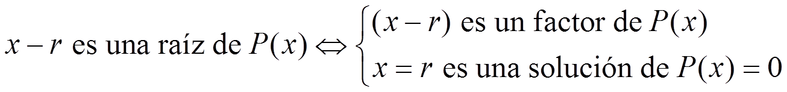
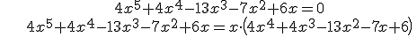
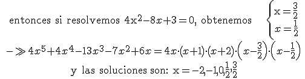

Ecuaciones y sistemas
ecuaciones de grado mayor que 2
Si P(x) es un polinomio, entonces:

Esto es por lo que las soluciones de una ecuación también se llaman raíces.
Entonces, para resolver una ecuación de grado mayor que 2, tenemos que descomponer el polinomio.
Ejemplo:

si aplicamos la regla de Ruffini dos veces con -1 y -2, tenemos en el cociente 4x2 - 8x + 3

Ejercicio. Resuelve:
a) x5 - x4 - 5x3 - 3x2 = 0
b) 2x4 - 11x3 + 18x2 - 4x - 8 = 0
Soluciones: a) -1, 0, 3; b) -1/2, 2
Obra publicada con Licencia Creative Commons Reconocimiento No comercial Compartir igual 3.0